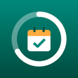

PlainSchengen privacy policy
This policy covers the PlainSchengen Android app (“PlainSchengen”), a calculator for the Schengen 90/180-day rule and a trip planner. In short: PlainSchengen does not collect, sell or share any data. It has no account, no ads, no analytics and no tracking. The app does not have permission to use the internet, and it never asks for access to your location, contacts, camera, photos or storage.
Information the app handles
- The trips you enter: entry and exit dates, and the country and note you choose to add.
- The names of the travellers you add, so each person can have their own trips.
- Your settings, such as theme and whether reminders are on.
All of it stays on your phone, in the app's private storage. None of it is ever sent to the developer or anyone else. The app never detects where you are; it works only from the dates you type in.
Notifications
If you turn on reminders, the app asks for permission to show notifications and then reminds you before the last day you can stay. Notifications are created on your phone; nothing is sent anywhere.
Exports, reports and backups
A PDF or CSV trip log, a backup file or a “report a wrong result” message is created only when you ask for one. It is saved only where you choose (through Android's file picker) or sent only to the app you pick in the share sheet. Restoring a backup reads only the file you pick.
Android backup
If you have turned on backup in your phone's settings, Android may include the app's data in your own device backup, so your trips can come back on a new phone. That backup is handled by Android and your Google account under their terms; the developer never receives it.
Storage and deletion
Deleting a trip or a traveller in the app deletes it from the app's storage. Uninstalling the app removes all its data. Since we never receive your data, there is nothing for us to delete on our side.
Not legal advice
PlainSchengen is an independent planning tool, not affiliated with any government or the European Union. Results are worked out from the dates you enter; they are not legal advice, and border guards make the final decision.
What we don't do
- We don't collect personal information.
- We don't sell or transfer user data to third parties.
- We don't show ads or use advertising IDs.
- We don't use analytics or crash-reporting services.
- We don't use your location.
Children
The app is not directed at children under 13 and does not knowingly collect information from anyone.
Changes
If this policy changes, the updated version will be posted on this page with a new date.
Contact
Questions or requests: open an issue on GitHub.